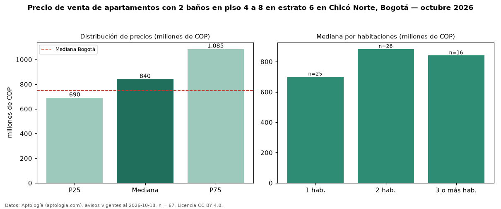

Precio de venta de apartamentos con 2 baños en piso 4 a 8 en estrato 6 en Chicó Norte, Bogotá — octubre 2026
En Chicó Norte, Bogotá, la mediana de precio de venta de apartamentos con 2 baños en piso 4 a 8 en estrato 6 es COP 840 millones, según 67 avisos vigentes. Prácticamente coincide con la mediana de los apartamentos con 2 baños en estrato 6 en venta de Chicó Norte (COP 840 millones, n = 195); este segmento reúne el 34 % de esos avisos. Por metro cuadrado, la mediana es COP 10,65 millones/m² (n = 63), 2 % por encima de los apartamentos con 2 baños en estrato 6 en venta de Chicó Norte (COP 10,46 millones/m²). El área mediana anunciada es 84 m². El segmento con más oferta es el de 2 habitaciones (26 avisos, mediana COP 882 millones); pasar de 1 habitación a 3 o más habitaciones cambia la mediana +20 %. La administración mediana declarada es COP 883.000 al mes (n = 59). La mediana de todos los apartamentos en venta de Bogotá es COP 750 millones (+12 % de diferencia). La mitad central de los avisos va de COP 690 millones a COP 1,08 mil millones (razón 1,6), una dispersión moderada. Datos: Aptología (aptologia.com), CC BY 4.0 — https://www.aptologia.com/venta/bogota/chico-norte. Archivos: PDF, CSV con las cifras y gráfica PNG.

| Avisos únicos | 67 |
|---|---|
| Percentil 25 | COP 690.000.000 |
| Mediana | COP 840.000.000 |
| Percentil 75 | COP 1.085.000.000 |
| Mediana por m² | COP 10.645.161 |
Fuente: avisos vigentes de portales inmobiliarios recopilados por Aptología, deduplicados (mínimo 30 avisos únicos por celda). Precios pedidos, no cerrados. Fecha: 2026-10-18.